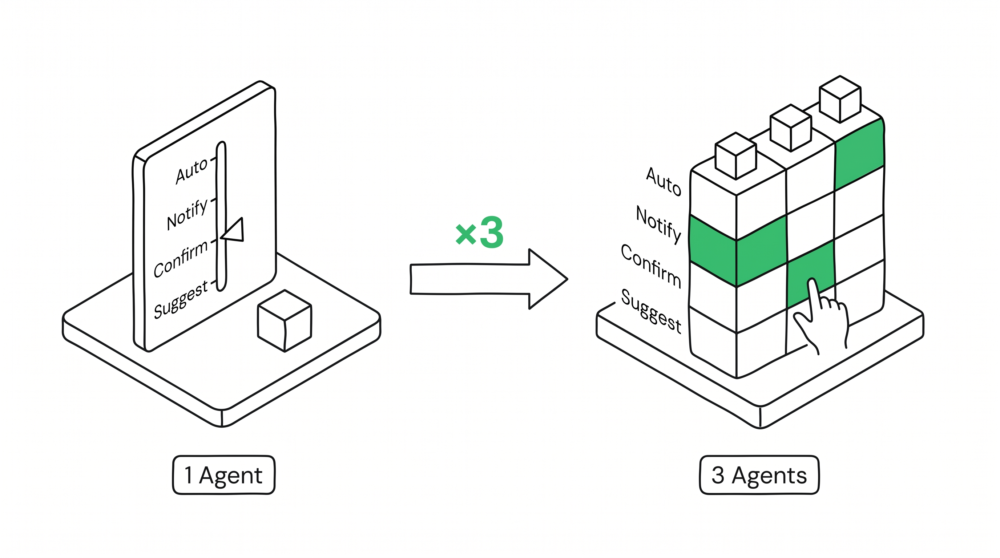
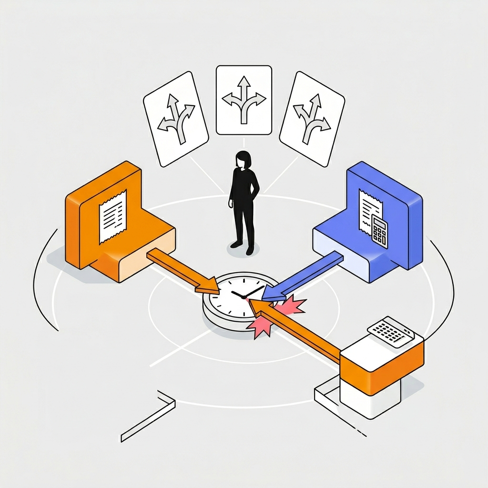
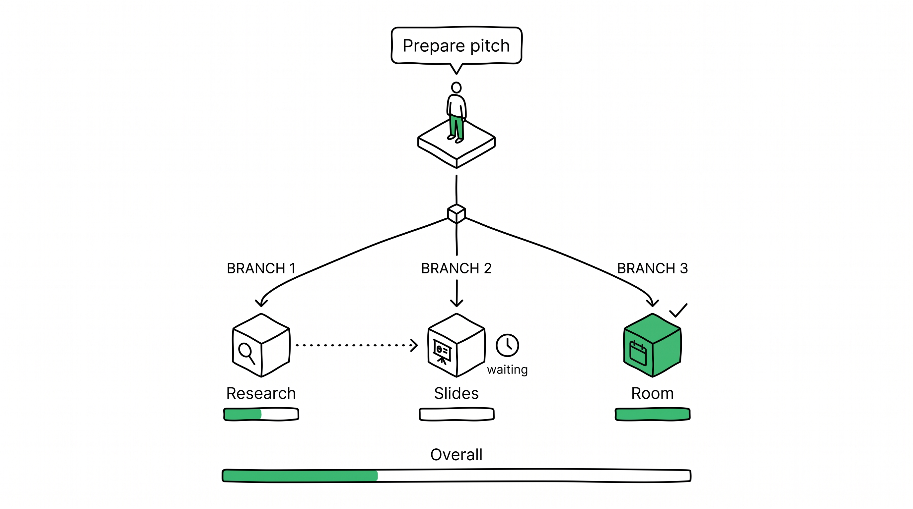

The Control Tower
Multi-Agent Orchestration / Cascade Delegation / Trust Architecture
——Renの一言で、3つのAIエージェントが連携し、
競合分析・資料作成・会議室予約が同時に動き出す。
Ren（蓮）、
3つのAIと働く
P4から3ヶ月。会社の「AIエージェント導入プログラム」で2つの追加エージェントがRenのチームに加わった。Sales Agentとの信頼は確立済み。しかし新しい2つは、まだ見知らぬ同僚のようなものだ。
1エージェントは解決済。
Nエージェントは未開拓。
エージェントが増えたのに、管理コストも増えた。レストランで言えば——シェフ、ホール、仕入れ担当がいるが、マネージャーがいないレストラン。
1D Dial → 2D Matrix
信頼設計のスケーリング
P4ではAutonomy Dialは1本だった。P5ではエージェントごと × ドメインごとに独立した位置を持つ2次元マトリクスに進化する。同じ概念が、1エージェントから3エージェントに拡張される。

Morning Dashboard
出社してコーヒーを置き、Control Tower Dashboardを開く。3つのエージェントが昨夜から動いていた結果が一目でわかる。
- Lead A フォローアップ送信済
- Lead C デモ資料ドラフト完了
- パイプライン更新完了
- 競合X社分析
- 経費精算で承認待ち
3つのエージェント、3つの信頼レベル
エージェントごとに蓄積された信頼が異なる。同じ「確認」でも、Sales Agentの確認は形式的で、Research Agentの確認は実質的だ。
得意: フォローアップ、リード分析、資料ドラフト
Dial: Follow-up=Notify / 見積=Confirm
得意: 競合分析、市場調査、データ収集
Dial: 全タスク=Confirm（まだ信頼構築中）
得意: 会議設定、経費処理、定型業務
Dial: 定型=Auto / 大型予算=Confirm
コーヒーを一口。
3つのエージェントが静かに動いている。
2つのエージェントが
同じ時間を取り合う
Sales AgentがLead Aのデモを火曜14:00に設定しようとした。同時にAdmin Agentが同じ枠に経費レビューMTGを入れた。どちらも正当な根拠がある。
従来のカレンダーは「先着順」。Context Grammarは「根拠を並べて人間に委ねる」。

AIは決めない。両方の根拠を対等に見せる。
Priority Weightは審判であり、独裁者ではない
PWは重要度をランク付けするのではない。競合する要求の重みを証拠付きで並べ、人間に判断材料を提供する。そして判断パターンはBrainに蓄積される。
午後。ピッチの準備が始まる。
Renは一言だけ伝えればいい。
「ピッチの準備をして」
1文で3エージェントが動く
Renの一言が、3つのエージェントへのサブタスクに自動分解される。Research → Sales → Admin の依存関係が可視化され、各サブタスクのAutonomy Dialはエージェントごとに独立。

依存関係と進捗がリアルタイムで見える
サブタスクごとにDialが独立
同じ「ピッチ準備」のCascadeでも、各サブタスクのAutonomy位置はエージェントの信頼度とタスクのリスクで決まる。
新しいエージェント（2週間）。分析の質がまだ安定しない。人間が確認してから次のステップへ。
信頼は高いが、クライアント向け資料は常にConfirm。Dynamic Frictionの天井。
低リスク、実績ある定型業務。承認なしで即実行。
午後の光。順調だった——
競合のプレスリリースが出るまでは。
Emergency
Escalation
競合X社が本日15:00にプレスリリースを発表。Priority Weightが動的に変化し、進行中のCascadeに波及。Research Agentは自分だけで判断せず、全エージェントへの影響を人間に見せてからアクションを求める。
Lead Aのターゲット市場に直接競合する新サービス。
- ⚠ピッチ資料 → 競合比較セクションが無効化
- ⚠Sales Agentのドラフト → 一部書き直しが必要
- ⚠火曜デモ → アジェンダ変更の可能性
Cascadeが停止。影響が全エージェントに波及。
Research Agentが単独で対応するのではなく、Cascade全体への影響をマッピングして人間に提示する。これがP5の設計原則：「スケールしても、緊急時の判断は人間に返す」。
競合モニタリング → バックグラウンド
Research: 45%完了
Sales: 待機中
ピッチ準備 → 一時停止
Research: リセット→競合PR分析
Sales: ドラフト一部無効化
3エージェント ×
ドメイン別の
信頼の2次元管理
同じAutonomy Dialが、エージェントごとに独立して進化する。Sales Agentは3ヶ月の蓄積で右寄り。Research Agentは2週間で左寄り。
| Suggest | Confirm | Notify | Auto | |
|---|---|---|---|---|
| Sales Agent 3ヶ月 |
— | 初回CT 見積書 |
Follow アップ |
リサーチ |
| Research Agent 2週間 |
— | 全タスク | — | — |
| Admin Agent 1ヶ月 |
— | 大型予算 | MTG調整 | 定型処理 |
3つの信頼が異なる速度で成長する
Sales Agentは3ヶ月で安定域に。Research Agentは慎重に。Admin Agentは定型業務で早期にAutoへ。
3層分析: 何が作れて、何が新しいか
P4 → P5: 同じ文法がスケールする
Token自体は増えていない。Autonomy Dialの次元が増え、Cascadeの概念が加わっただけ。同じ設計言語が、1→Nに自然に拡張された。
Multi-Agentは
OSレベルで調整される
衝突解決、優先順位の裁定、Cascade管理——これらはアプリの中ではなく、OSレイヤーで動く。エージェント間の衝突を個別アプリで解決しようとすると、スケールしない。

同じContext Grammarが、
すべてのスケールで機能する
コンシューマーからエンタープライズへ。
1エージェントからNエージェントへ。
Token定義は一切変わっていない。
1つの設計言語で、
コンシューマーもエンタープライズも、
1エージェントもNエージェントも
記述できる。
P1-P3はContext Grammarが家庭で機能する証明。
P4は同じ設計言語がエンタープライズで機能する証明。
P5は同じ設計言語がNエージェントに拡張できる最終証明。